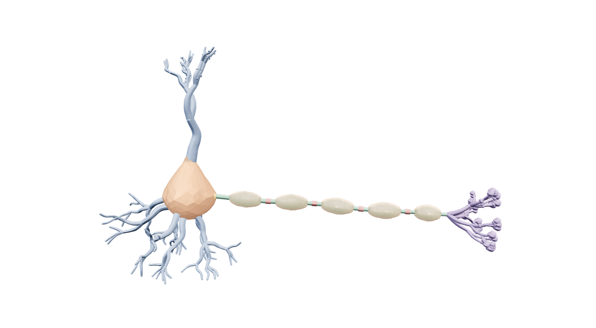

The Lab
Explore a neuron
The brain's basic unit, built to carry signals. Spin it, click a part to see what it does, and hit Fire to send an impulse down the axon. You can also break any part to see what goes wrong, then repair it.
Building the neuron…

Your browser could not start 3D graphics. You can still read about each part using the buttons above.
Drag to rotate · scroll to zoom · click a part
A stylized teaching model built by The Neuroscience Review. Descriptions written and sourced by us. Real neurons vary enormously in shape.